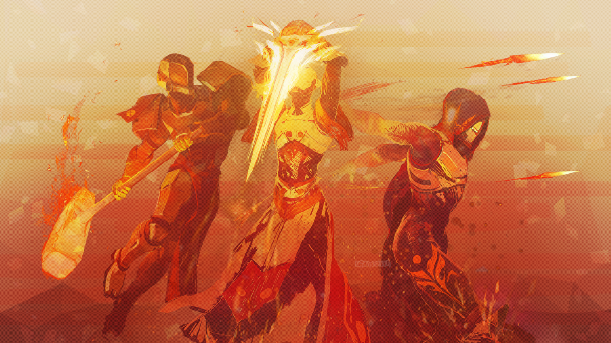
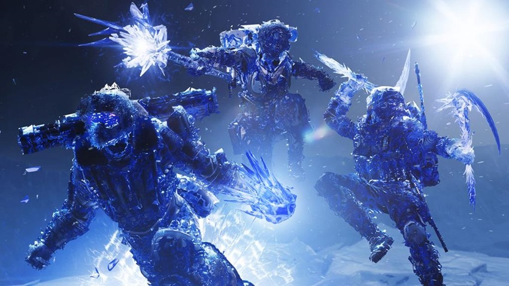

General Information

All classes in Destiny 2 each get another exclusive subclass to replace the Sunsinger, Defender, and Bladedancer.
Warlocks get access to the Dawnblade, which allows them to wield a sword of fire which enables them to send of waves of flames at enemies.
Titans get access to the Sentinel, which allows them to wield a shield that they can use to block damage and as either a blunt melee weapon or ranged throwing weapon.
Hunters get access to the Arcstrider, which allows them to wield a spear of electricity that they can use to quickly slash everything on their path.
There are a total of 9 subclasses in the game.

In Forsaken a new tree has been added for each subclass. Hunters got for the Gunslinger the Blade Barrage, for the Nightstalker the Spectral Blades and for the Arcstrider the Whirling Guard.
Titans got for the Striker the Thundercrash, for the Sentinel the Banner Shield and for the Sunbreaker the Burning Maul.
Warlocks got for the Dawnblade the Well of Radiance, for the Stormcaller the Chaos Reach and for the Voidwalker the Nova Warp.

There are also some new subclasses from Beyond Light which are known as Stasis, this includes the Revenant for the Hunter, the Behemoth for the Titans and the Shadebinder for the Warlocks.